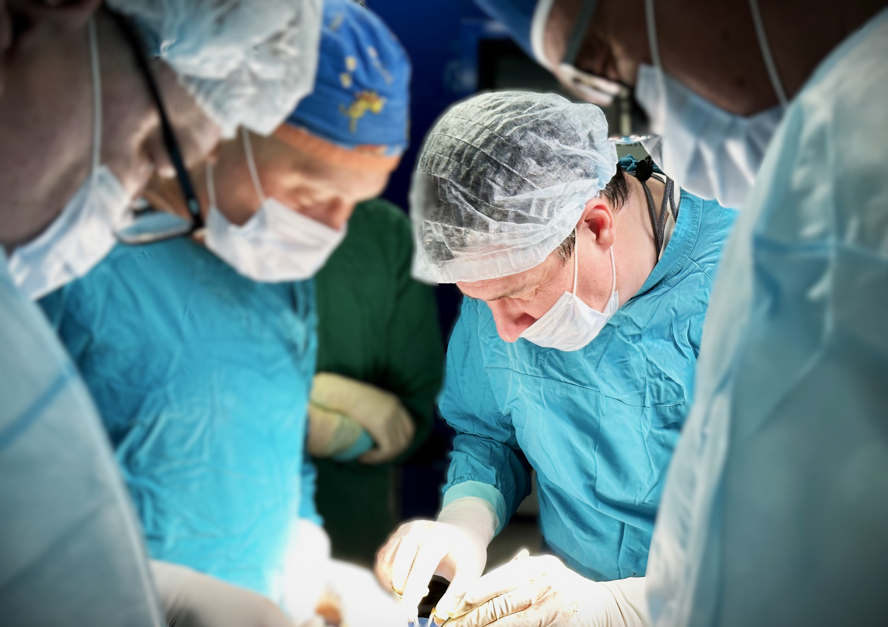

С 1915 года — Санкт-Петербург
Высокотехнологичная помощь при заболеваниях урологического профиля. Бесплатное лечение по полису ОМС.
+7 (812) 576-11-57О ЦЕНТРЕ
Городской центр эндоскопической урологии и новых технологий создан по Распоряжению Комитета по здравоохранению Санкт-Петербурга для оказания высокотехнологичной помощи населению с заболеваниями урологического профиля.
Предоставляем бесплатное лечение при наличии полиса ОМС. Клиническая больница "Святителя Луки" — многопрофильный 374-коечный стационар с хирургическим, гинекологическим, терапевтическим, урологическим, гериатрическим, неврологическим и онкологическим отделениями.
Коек в стационаре
Год создания центра
История с года
Бесплатное лечение
НАШИ НАПРАВЛЕНИЯ
Лазерная энуклеация, лапароскопическая аденомэктомия, ТУР и ТУЭБ при любых размерах простаты
ДЛТ, контактная литотрипсия, лапароскопическое удаление камней, перкутанная нефролитотрипсия
Лечение рака почки, мочевого пузыря и простаты с применением малоинвазивных технологий
Лапароскопическая пластика, кишечная пластика мочеточника, лечение стриктур, нефропексия
Лечение варикоцеле, операция Мармара, терапия преждевременного семяизвержения
КУДИ, лечение недержания мочи, БОС-терапия, ботулинотерапия, диагностика интерстициального цистита

ГЛАВНЫЙ ВРАЧ
Главный врач КБ "Святителя Луки" | Руководитель Городского центра эндоскопической урологии
Доктор медицинских наук, ведущий специалист в области эндоскопической урологии. Возглавляет один из крупнейших урологических центров России.

НОВЕЙШЕЕ НАПРАВЛЕНИЕ
Робот-ассистированная хирургия открывает новые возможности в лечении сложных урологических заболеваний. Точность движений, минимальная травматичность и ускоренная реабилитация.
НАУКА И ИССЛЕДОВАНИЯ
Научный отдел центра занимается развитием урологической помощи через непрерывные исследования, клинические испытания и разработку инновационных протоколов лечения.
Регулярное участие в международных конгрессах по урологии и стажировки в ведущих европейских клиниках.
Более 150 публикаций в международных и российских рецензируемых журналах по эндоскопической хирургии.
Мастер-классы по эндоскопической урологии, стажировка ординаторов, подготовка к сертификации, выездные школы и семинары.
НОВОСТИ
26 ИЮНЯ 2026
Премьера сериала «ИИ будущего» с участием инновационных технологий нашего центра
19 ИЮНЯ 2026
Коллектив КБ «Святителя Луки» награжден Почетной грамотой Законодательного Собрания СПб
21 АПРЕЛЯ 2026
Камни в почках: современные методы диагностики и лечения в нашем центре
Следите за обновлениями: новые услуги, международные партнерства, предстоящие конференции и научные мероприятия.
Получите экспертную урологическую консультацию, не выходя из дома. Наши специалисты проводят удаленные видеоконсультации.
Или позвоните +7 (812) 576-11-57
Наша команда опытных специалистов готова оказать вам комплексную помощь с использованием новейших медицинских технологий. Бесплатное лечение по ОМС.